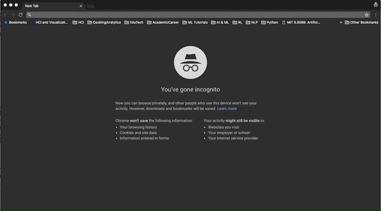

I'm listening...
Instruction 1/9
1. In this experiment, we want to see how using voice to navigate how-to videos can help people accomplish their tasks.
Instruction 2/9
2. YOU HAVE TO WATCH, DO AND LEARN SIMULTANEOUSLY.
So please have the necessary tools ready,
so you can follow the video while doing the tasks.
Instruction 3/9
3. Visit https://www.minsukchang.com/voiceyoutubedemo/ and when prompted about microphone access, click “ALLOW”. You will need this in order for the interface to listen to you. 
Instruction 4/9
4. paste in the URL of the video you found and click (or say) “change video”
If the video changes
and starts playing, say “stop”
If these steps worked, your microphone is working with the interface.
If it does not work, please refresh the page, and follow the steps 3 and 4 again.

Instruction 5/9
At any point if you think the interface is not listening to you, you can click on the “start listening again” button.
Instruction 6/9
6. Please wear a headset and watch the video and follow the tasks
Instruction 7/9
7. Feel free to pick another video, if first video is not good for you at any point in the study.
Just
find another video from YouTube and paste the URL.
Instruction 8+9/9
8. THINK ALOUD THROUGHOUT.
Describe what you’re trying to do and why
You may pause, go back, skip, watch again, take
as much time as you want to finish.
9. Go ahead and start learning and doing while watching
the video!
You can visit this instruction again by clicking "view instruction again" button.